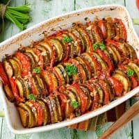

A collection of summer vegetables like eggplant, zucchini, tomatoes, and bell peppers, stewed together with onions, garlic, and herbs
A classic French dessert featuring a rich, creamy, vanilla-flavored custard base with a signature crisp layer of caramelized sugar on top.
TFrench onion soup is a rich, comforting, and savory dish made with caramelized onions and beef broth. A warm, comforting and nostalgic dish for the French.
A savory French tart originating from the Lorraine region of France, featuring a rich filling of cream, eggs, and smoky bacon baked in a buttery pastry crust